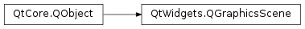

QGraphicsScene¶
Synopsis¶
Functions¶
- def
activePanel() - def
activeWindow() - def
addEllipse(rect[, pen=QPen()[, brush=QBrush()]]) - def
addEllipse(x, y, w, h[, pen=QPen()[, brush=QBrush()]]) - def
addItem(item) - def
addLine(line[, pen=QPen()]) - def
addLine(x1, y1, x2, y2[, pen=QPen()]) - def
addPath(path[, pen=QPen()[, brush=QBrush()]]) - def
addPixmap(pixmap) - def
addPolygon(polygon[, pen=QPen()[, brush=QBrush()]]) - def
addRect(rect[, pen=QPen()[, brush=QBrush()]]) - def
addRect(x, y, w, h[, pen=QPen()[, brush=QBrush()]]) - def
addSimpleText(text[, font=QFont()]) - def
addText(text[, font=QFont()]) - def
addWidget(widget[, wFlags=Qt.WindowFlags()]) - def
backgroundBrush() - def
bspTreeDepth() - def
clearFocus() - def
collidingItems(item[, mode=Qt.IntersectsItemShape]) - def
createItemGroup(items) - def
destroyItemGroup(group) - def
focusItem() - def
font() - def
foregroundBrush() - def
hasFocus() - def
height() - def
invalidate(x, y, w, h[, layers=QGraphicsScene.AllLayers]) - def
isActive() - def
isSortCacheEnabled() - def
itemAt(pos, deviceTransform) - def
itemAt(x, y, deviceTransform) - def
itemIndexMethod() - def
items([order=Qt.DescendingOrder]) - def
items(path[, mode=Qt.IntersectsItemShape[, order=Qt.DescendingOrder[, deviceTransform=QTransform()]]]) - def
items(polygon[, mode=Qt.IntersectsItemShape[, order=Qt.DescendingOrder[, deviceTransform=QTransform()]]]) - def
items(pos[, mode=Qt.IntersectsItemShape[, order=Qt.DescendingOrder[, deviceTransform=QTransform()]]]) - def
items(rect[, mode=Qt.IntersectsItemShape[, order=Qt.DescendingOrder[, deviceTransform=QTransform()]]]) - def
items(x, y, w, h, mode, order[, deviceTransform=QTransform()]) - def
itemsBoundingRect() - def
minimumRenderSize() - def
mouseGrabberItem() - def
palette() - def
removeItem(item) - def
render(painter[, target=QRectF()[, source=QRectF()[, aspectRatioMode=Qt.KeepAspectRatio]]]) - def
sceneRect() - def
selectedItems() - def
selectionArea() - def
sendEvent(item, event) - def
setActivePanel(item) - def
setActiveWindow(widget) - def
setBackgroundBrush(brush) - def
setBspTreeDepth(depth) - def
setFocus([focusReason=Qt.OtherFocusReason]) - def
setFocusItem(item[, focusReason=Qt.OtherFocusReason]) - def
setFont(font) - def
setForegroundBrush(brush) - def
setItemIndexMethod(method) - def
setMinimumRenderSize(minSize) - def
setPalette(palette) - def
setSceneRect(rect) - def
setSceneRect(x, y, w, h) - def
setSelectionArea(path, deviceTransform) - def
setSelectionArea(path, selectionOperation[, mode=Qt.IntersectsItemShape[, deviceTransform=QTransform()]]) - def
setSelectionArea(path[, mode=Qt.IntersectsItemShape[, deviceTransform=QTransform()]]) - def
setSortCacheEnabled(enabled) - def
setStickyFocus(enabled) - def
setStyle(style) - def
stickyFocus() - def
style() - def
update(x, y, w, h) - def
views() - def
width()
Virtual functions¶
- def
contextMenuEvent(event) - def
dragEnterEvent(event) - def
dragLeaveEvent(event) - def
dragMoveEvent(event) - def
drawBackground(painter, rect) - def
drawForeground(painter, rect) - def
dropEvent(event) - def
focusInEvent(event) - def
focusOutEvent(event) - def
helpEvent(event) - def
inputMethodEvent(event) - def
inputMethodQuery(query) - def
keyPressEvent(event) - def
keyReleaseEvent(event) - def
mouseDoubleClickEvent(event) - def
mouseMoveEvent(event) - def
mousePressEvent(event) - def
mouseReleaseEvent(event) - def
wheelEvent(event)
Slots¶
- def
advance() - def
clear() - def
clearSelection() - def
focusNextPrevChild(next) - def
invalidate([rect=QRectF()[, layers=QGraphicsScene.AllLayers]]) - def
update([rect=QRectF()])
Signals¶
- def
changed(region) - def
focusItemChanged(newFocus, oldFocus, reason) - def
sceneRectChanged(rect) - def
selectionChanged()
Detailed Description¶
The
PySide2.QtWidgets.QGraphicsSceneclass provides a surface for managing a large number of 2D graphical items.The class serves as a container for QGraphicsItems. It is used together with
PySide2.QtWidgets.QGraphicsViewfor visualizing graphical items, such as lines, rectangles, text, or even custom items, on a 2D surface.PySide2.QtWidgets.QGraphicsSceneis part of the Graphics View Framework .
PySide2.QtWidgets.QGraphicsScenealso provides functionality that lets you efficiently determine both the location of items, and for determining what items are visible within an arbitrary area on the scene. With thePySide2.QtWidgets.QGraphicsViewwidget, you can either visualize the whole scene, or zoom in and view only parts of the scene.Example:
scene = QGraphicsScene() scene.addText("Hello, world!") view = QGraphicsView(&scene) view.show()Note that
PySide2.QtWidgets.QGraphicsScenehas no visual appearance of its own; it only manages the items. You need to create aPySide2.QtWidgets.QGraphicsViewwidget to visualize the scene.To add items to a scene, you start off by constructing a
PySide2.QtWidgets.QGraphicsSceneobject. Then, you have two options: either add your existingPySide2.QtWidgets.QGraphicsItemobjects by callingPySide2.QtWidgets.QGraphicsScene.addItem(), or you can call one of the convenience functionsPySide2.QtWidgets.QGraphicsScene.addEllipse(),PySide2.QtWidgets.QGraphicsScene.addLine(),PySide2.QtWidgets.QGraphicsScene.addPath(),PySide2.QtWidgets.QGraphicsScene.addPixmap(),PySide2.QtWidgets.QGraphicsScene.addPolygon(),PySide2.QtWidgets.QGraphicsScene.addRect(), orPySide2.QtWidgets.QGraphicsScene.addText(), which all return a pointer to the newly added item. The dimensions of the items added with these functions are relative to the item’s coordinate system, and the items position is initialized to (0, 0) in the scene.You can then visualize the scene using
PySide2.QtWidgets.QGraphicsView. When the scene changes, (e.g., when an item moves or is transformed)PySide2.QtWidgets.QGraphicsSceneemits thePySide2.QtWidgets.QGraphicsScene.changed()signal. To remove an item, callPySide2.QtWidgets.QGraphicsScene.removeItem().
PySide2.QtWidgets.QGraphicsSceneuses an indexing algorithm to manage the location of items efficiently. By default, a BSP (Binary Space Partitioning) tree is used; an algorithm suitable for large scenes where most items remain static (i.e., do not move around). You can choose to disable this index by callingPySide2.QtWidgets.QGraphicsScene.setItemIndexMethod(). For more information about the available indexing algorithms, see thePySide2.QtWidgets.QGraphicsScene.itemIndexMethod()property.The scene’s bounding rect is set by calling
PySide2.QtWidgets.QGraphicsScene.setSceneRect(). Items can be placed at any position on the scene, and the size of the scene is by default unlimited. The scene rect is used only for internal bookkeeping, maintaining the scene’s item index. If the scene rect is unset,PySide2.QtWidgets.QGraphicsScenewill use the bounding area of all items, as returned byPySide2.QtWidgets.QGraphicsScene.itemsBoundingRect(), as the scene rect. However,PySide2.QtWidgets.QGraphicsScene.itemsBoundingRect()is a relatively time consuming function, as it operates by collecting positional information for every item on the scene. Because of this, you should always set the scene rect when operating on large scenes.One of
PySide2.QtWidgets.QGraphicsScene‘s greatest strengths is its ability to efficiently determine the location of items. Even with millions of items on the scene, thePySide2.QtWidgets.QGraphicsScene.items()functions can determine the location of an item within a few milliseconds. There are several overloads toPySide2.QtWidgets.QGraphicsScene.items(): one that finds items at a certain position, one that finds items inside or intersecting with a polygon or a rectangle, and more. The list of returned items is sorted by stacking order, with the topmost item being the first item in the list. For convenience, there is also anPySide2.QtWidgets.QGraphicsScene.itemAt()function that returns the topmost item at a given position.
PySide2.QtWidgets.QGraphicsScenemaintains selection information for the scene. To select items, callPySide2.QtWidgets.QGraphicsScene.setSelectionArea(), and to clear the current selection, callPySide2.QtWidgets.QGraphicsScene.clearSelection(). CallPySide2.QtWidgets.QGraphicsScene.selectedItems()to get the list of all selected items.
Event Handling and Propagation¶
Another responsibility that
PySide2.QtWidgets.QGraphicsScenehas, is to propagate events fromPySide2.QtWidgets.QGraphicsView. To send an event to a scene, you construct an event that inheritsPySide2.QtCore.QEvent, and then send it using, for example,QApplication.sendEvent().PySide2.QtWidgets.QGraphicsScene.event()is responsible for dispatching the event to the individual items. Some common events are handled by convenience event handlers. For example, key press events are handled byPySide2.QtWidgets.QGraphicsScene.keyPressEvent(), and mouse press events are handled byPySide2.QtWidgets.QGraphicsScene.mousePressEvent().Key events are delivered to the focus item . To set the focus item, you can either call
PySide2.QtWidgets.QGraphicsScene.setFocusItem(), passing an item that accepts focus, or the item itself can callQGraphicsItem.setFocus(). CallPySide2.QtWidgets.QGraphicsScene.focusItem()to get the current focus item. For compatibility with widgets, the scene also maintains its own focus information. By default, the scene does not have focus, and all key events are discarded. IfPySide2.QtWidgets.QGraphicsScene.setFocus()is called, or if an item on the scene gains focus, the scene automatically gains focus. If the scene has focus,PySide2.QtWidgets.QGraphicsScene.hasFocus()will return true, and key events will be forwarded to the focus item, if any. If the scene loses focus, (i.e., someone callsPySide2.QtWidgets.QGraphicsScene.clearFocus()) while an item has focus, the scene will maintain its item focus information, and once the scene regains focus, it will make sure the last focus item regains focus.For mouse-over effects,
PySide2.QtWidgets.QGraphicsScenedispatches hover events . If an item accepts hover events (seeQGraphicsItem.acceptHoverEvents()), it will receive aGraphicsSceneHoverEnterevent when the mouse enters its area. As the mouse continues moving inside the item’s area,PySide2.QtWidgets.QGraphicsScenewill send itGraphicsSceneHoverMoveevents. When the mouse leaves the item’s area, the item will receive aGraphicsSceneHoverLeaveevent.All mouse events are delivered to the current mouse grabber item. An item becomes the scene’s mouse grabber if it accepts mouse events (see
QGraphicsItem.acceptedMouseButtons()) and it receives a mouse press. It stays the mouse grabber until it receives a mouse release when no other mouse buttons are pressed. You can callPySide2.QtWidgets.QGraphicsScene.mouseGrabberItem()to determine what item is currently grabbing the mouse.
-
class
PySide2.QtWidgets.QGraphicsScene([parent=nullptr])¶ -
class
PySide2.QtWidgets.QGraphicsScene(sceneRect[, parent=nullptr]) -
class
PySide2.QtWidgets.QGraphicsScene(x, y, width, height[, parent=nullptr]) Parameters: - height –
PySide2.QtCore.qreal - sceneRect –
PySide2.QtCore.QRectF - width –
PySide2.QtCore.qreal - x –
PySide2.QtCore.qreal - y –
PySide2.QtCore.qreal - parent –
PySide2.QtCore.QObject
Constructs a
PySide2.QtWidgets.QGraphicsSceneobject. Theparentparameter is passed toPySide2.QtCore.QObject‘s constructor.Constructs a
PySide2.QtWidgets.QGraphicsSceneobject, usingsceneRectfor its scene rectangle. Theparentparameter is passed toPySide2.QtCore.QObject‘s constructor.Constructs a
PySide2.QtWidgets.QGraphicsSceneobject, using the rectangle specified by (x,y), and the givenwidthandheightfor its scene rectangle. Theparentparameter is passed toPySide2.QtCore.QObject‘s constructor.- height –
-
PySide2.QtWidgets.QGraphicsScene.ItemIndexMethod¶ This enum describes the indexing algorithms
PySide2.QtWidgets.QGraphicsSceneprovides for managing positional information about items on the scene.Constant Description QGraphicsScene.BspTreeIndex A Binary Space Partitioning tree is applied. All PySide2.QtWidgets.QGraphicsScene‘s item location algorithms are of an order close to logarithmic complexity, by making use of binary search. Adding, moving and removing items is logarithmic. This approach is best for static scenes (i.e., scenes where most items do not move).QGraphicsScene.NoIndex No index is applied. Item location is of linear complexity, as all items on the scene are searched. Adding, moving and removing items, however, is done in constant time. This approach is ideal for dynamic scenes, where many items are added, moved or removed continuously.
-
PySide2.QtWidgets.QGraphicsScene.SceneLayer¶ This enum describes the rendering layers in a
PySide2.QtWidgets.QGraphicsScene. WhenPySide2.QtWidgets.QGraphicsScenedraws the scene contents, it renders each of these layers separately, in order.Each layer represents a flag that can be OR’ed together when calling functions such as
PySide2.QtWidgets.QGraphicsScene.invalidate()orQGraphicsView.invalidateScene().Constant Description QGraphicsScene.ItemLayer The item layer. PySide2.QtWidgets.QGraphicsScenerenders all items are in this layer by calling the virtual functionPySide2.QtWidgets.QGraphicsScene.drawItems(). The item layer is drawn after the background layer, but before the foreground layer.QGraphicsScene.BackgroundLayer The background layer. PySide2.QtWidgets.QGraphicsScenerenders the scene’s background in this layer by calling the virtual functionPySide2.QtWidgets.QGraphicsScene.drawBackground(). The background layer is drawn first of all layers.QGraphicsScene.ForegroundLayer The foreground layer. PySide2.QtWidgets.QGraphicsScenerenders the scene’s foreground in this layer by calling the virtual functionPySide2.QtWidgets.QGraphicsScene.drawForeground(). The foreground layer is drawn last of all layers.QGraphicsScene.AllLayers All layers; this value represents a combination of all three layers.
-
PySide2.QtWidgets.QGraphicsScene.activePanel()¶ Return type: PySide2.QtWidgets.QGraphicsItemReturns the current active panel, or 0 if no panel is currently active.
See also
-
PySide2.QtWidgets.QGraphicsScene.activeWindow()¶ Return type: PySide2.QtWidgets.QGraphicsWidgetReturns the current active window, or 0 if no window is currently active.
See also
-
PySide2.QtWidgets.QGraphicsScene.addEllipse(rect[, pen=QPen()[, brush=QBrush()]])¶ Parameters: - rect –
PySide2.QtCore.QRectF - pen –
PySide2.QtGui.QPen - brush –
PySide2.QtGui.QBrush
Return type: Creates and adds an ellipse item to the scene, and returns the item pointer. The geometry of the ellipse is defined by
rect, and its pen and brush are initialized topenandbrush.Note that the item’s geometry is provided in item coordinates, and its position is initialized to (0, 0).
If the item is visible (i.e.,
QGraphicsItem.isVisible()returnstrue),PySide2.QtWidgets.QGraphicsScenewill emitPySide2.QtWidgets.QGraphicsScene.changed()once control goes back to the event loop.See also
PySide2.QtWidgets.QGraphicsScene.addLine()PySide2.QtWidgets.QGraphicsScene.addPath()PySide2.QtWidgets.QGraphicsScene.addPixmap()PySide2.QtWidgets.QGraphicsScene.addRect()PySide2.QtWidgets.QGraphicsScene.addText()PySide2.QtWidgets.QGraphicsScene.addItem()PySide2.QtWidgets.QGraphicsScene.addWidget()- rect –
-
PySide2.QtWidgets.QGraphicsScene.addEllipse(x, y, w, h[, pen=QPen()[, brush=QBrush()]]) Parameters: - x –
PySide2.QtCore.qreal - y –
PySide2.QtCore.qreal - w –
PySide2.QtCore.qreal - h –
PySide2.QtCore.qreal - pen –
PySide2.QtGui.QPen - brush –
PySide2.QtGui.QBrush
Return type: This convenience function is equivalent to calling
PySide2.QtWidgets.QGraphicsScene.addEllipse()(PySide2.QtCore.QRectF(x,y,w,h),pen,brush).- x –
-
PySide2.QtWidgets.QGraphicsScene.addItem(item)¶ Parameters: item – PySide2.QtWidgets.QGraphicsItemAdds or moves the
itemand all its childen to this scene. This scene takes ownership of theitem.If the item is visible (i.e.,
QGraphicsItem.isVisible()returns true),PySide2.QtWidgets.QGraphicsScenewill emitPySide2.QtWidgets.QGraphicsScene.changed()once control goes back to the event loop.If the item is already in a different scene, it will first be removed from its old scene, and then added to this scene as a top-level.
PySide2.QtWidgets.QGraphicsScenewill send ItemSceneChange notifications toitemwhile it is added to the scene. If item does not currently belong to a scene, only one notification is sent. If it does belong to scene already (i.e., it is moved to this scene),PySide2.QtWidgets.QGraphicsScenewill send an addition notification as the item is removed from its previous scene.If the item is a panel, the scene is active, and there is no active panel in the scene, then the item will be activated.
See also
PySide2.QtWidgets.QGraphicsScene.removeItem()PySide2.QtWidgets.QGraphicsScene.addEllipse()PySide2.QtWidgets.QGraphicsScene.addLine()PySide2.QtWidgets.QGraphicsScene.addPath()PySide2.QtWidgets.QGraphicsScene.addPixmap()PySide2.QtWidgets.QGraphicsScene.addRect()PySide2.QtWidgets.QGraphicsScene.addText()PySide2.QtWidgets.QGraphicsScene.addWidget()Sorting
-
PySide2.QtWidgets.QGraphicsScene.addLine(x1, y1, x2, y2[, pen=QPen()])¶ Parameters: - x1 –
PySide2.QtCore.qreal - y1 –
PySide2.QtCore.qreal - x2 –
PySide2.QtCore.qreal - y2 –
PySide2.QtCore.qreal - pen –
PySide2.QtGui.QPen
Return type: This convenience function is equivalent to calling
PySide2.QtWidgets.QGraphicsScene.addLine()(PySide2.QtCore.QLineF(x1,y1,x2,y2),pen).- x1 –
-
PySide2.QtWidgets.QGraphicsScene.addLine(line[, pen=QPen()]) Parameters: - line –
PySide2.QtCore.QLineF - pen –
PySide2.QtGui.QPen
Return type: Creates and adds a line item to the scene, and returns the item pointer. The geometry of the line is defined by
line, and its pen is initialized topen.Note that the item’s geometry is provided in item coordinates, and its position is initialized to (0, 0).
If the item is visible (i.e.,
QGraphicsItem.isVisible()returnstrue),PySide2.QtWidgets.QGraphicsScenewill emitPySide2.QtWidgets.QGraphicsScene.changed()once control goes back to the event loop.See also
PySide2.QtWidgets.QGraphicsScene.addEllipse()PySide2.QtWidgets.QGraphicsScene.addPath()PySide2.QtWidgets.QGraphicsScene.addPixmap()PySide2.QtWidgets.QGraphicsScene.addRect()PySide2.QtWidgets.QGraphicsScene.addText()PySide2.QtWidgets.QGraphicsScene.addItem()PySide2.QtWidgets.QGraphicsScene.addWidget()- line –
-
PySide2.QtWidgets.QGraphicsScene.addPath(path[, pen=QPen()[, brush=QBrush()]])¶ Parameters: - path –
PySide2.QtGui.QPainterPath - pen –
PySide2.QtGui.QPen - brush –
PySide2.QtGui.QBrush
Return type: Creates and adds a path item to the scene, and returns the item pointer. The geometry of the path is defined by
path, and its pen and brush are initialized topenandbrush.Note that the item’s geometry is provided in item coordinates, and its position is initialized to (0, 0).
If the item is visible (i.e.,
QGraphicsItem.isVisible()returnstrue),PySide2.QtWidgets.QGraphicsScenewill emitPySide2.QtWidgets.QGraphicsScene.changed()once control goes back to the event loop.See also
PySide2.QtWidgets.QGraphicsScene.addEllipse()PySide2.QtWidgets.QGraphicsScene.addLine()PySide2.QtWidgets.QGraphicsScene.addPixmap()PySide2.QtWidgets.QGraphicsScene.addRect()PySide2.QtWidgets.QGraphicsScene.addText()PySide2.QtWidgets.QGraphicsScene.addItem()PySide2.QtWidgets.QGraphicsScene.addWidget()- path –
-
PySide2.QtWidgets.QGraphicsScene.addPixmap(pixmap)¶ Parameters: pixmap – PySide2.QtGui.QPixmapReturn type: PySide2.QtWidgets.QGraphicsPixmapItemCreates and adds a pixmap item to the scene, and returns the item pointer. The pixmap is defined by
pixmap.Note that the item’s geometry is provided in item coordinates, and its position is initialized to (0, 0).
If the item is visible (i.e.,
QGraphicsItem.isVisible()returnstrue),PySide2.QtWidgets.QGraphicsScenewill emitPySide2.QtWidgets.QGraphicsScene.changed()once control goes back to the event loop.See also
PySide2.QtWidgets.QGraphicsScene.addEllipse()PySide2.QtWidgets.QGraphicsScene.addLine()PySide2.QtWidgets.QGraphicsScene.addPath()PySide2.QtWidgets.QGraphicsScene.addRect()PySide2.QtWidgets.QGraphicsScene.addText()PySide2.QtWidgets.QGraphicsScene.addItem()PySide2.QtWidgets.QGraphicsScene.addWidget()
-
PySide2.QtWidgets.QGraphicsScene.addPolygon(polygon[, pen=QPen()[, brush=QBrush()]])¶ Parameters: - polygon –
PySide2.QtGui.QPolygonF - pen –
PySide2.QtGui.QPen - brush –
PySide2.QtGui.QBrush
Return type: Creates and adds a polygon item to the scene, and returns the item pointer. The polygon is defined by
polygon, and its pen and brush are initialized topenandbrush.Note that the item’s geometry is provided in item coordinates, and its position is initialized to (0, 0).
If the item is visible (i.e.,
QGraphicsItem.isVisible()returnstrue),PySide2.QtWidgets.QGraphicsScenewill emitPySide2.QtWidgets.QGraphicsScene.changed()once control goes back to the event loop.See also
PySide2.QtWidgets.QGraphicsScene.addEllipse()PySide2.QtWidgets.QGraphicsScene.addLine()PySide2.QtWidgets.QGraphicsScene.addPath()PySide2.QtWidgets.QGraphicsScene.addRect()PySide2.QtWidgets.QGraphicsScene.addText()PySide2.QtWidgets.QGraphicsScene.addItem()PySide2.QtWidgets.QGraphicsScene.addWidget()- polygon –
-
PySide2.QtWidgets.QGraphicsScene.addRect(x, y, w, h[, pen=QPen()[, brush=QBrush()]])¶ Parameters: - x –
PySide2.QtCore.qreal - y –
PySide2.QtCore.qreal - w –
PySide2.QtCore.qreal - h –
PySide2.QtCore.qreal - pen –
PySide2.QtGui.QPen - brush –
PySide2.QtGui.QBrush
Return type: This convenience function is equivalent to calling
PySide2.QtWidgets.QGraphicsScene.addRect()(PySide2.QtCore.QRectF(x,y,w,h),pen,brush).- x –
-
PySide2.QtWidgets.QGraphicsScene.addRect(rect[, pen=QPen()[, brush=QBrush()]]) Parameters: - rect –
PySide2.QtCore.QRectF - pen –
PySide2.QtGui.QPen - brush –
PySide2.QtGui.QBrush
Return type: Creates and adds a rectangle item to the scene, and returns the item pointer. The geometry of the rectangle is defined by
rect, and its pen and brush are initialized topenandbrush.Note that the item’s geometry is provided in item coordinates, and its position is initialized to (0, 0). For example, if a
PySide2.QtCore.QRect(50, 50, 100, 100) is added, its top-left corner will be at (50, 50) relative to the origin in the items coordinate system.If the item is visible (i.e.,
QGraphicsItem.isVisible()returnstrue),PySide2.QtWidgets.QGraphicsScenewill emitPySide2.QtWidgets.QGraphicsScene.changed()once control goes back to the event loop.See also
PySide2.QtWidgets.QGraphicsScene.addEllipse()PySide2.QtWidgets.QGraphicsScene.addLine()PySide2.QtWidgets.QGraphicsScene.addPixmap()PySide2.QtWidgets.QGraphicsScene.addPixmap()PySide2.QtWidgets.QGraphicsScene.addText()PySide2.QtWidgets.QGraphicsScene.addItem()PySide2.QtWidgets.QGraphicsScene.addWidget()- rect –
-
PySide2.QtWidgets.QGraphicsScene.addSimpleText(text[, font=QFont()])¶ Parameters: - text – unicode
- font –
PySide2.QtGui.QFont
Return type: Creates and adds a
PySide2.QtWidgets.QGraphicsSimpleTextItemto the scene, and returns the item pointer. The text string is initialized totext, and its font is initialized tofont.The item’s position is initialized to (0, 0).
If the item is visible (i.e.,
QGraphicsItem.isVisible()returnstrue),PySide2.QtWidgets.QGraphicsScenewill emitPySide2.QtWidgets.QGraphicsScene.changed()once control goes back to the event loop.See also
PySide2.QtWidgets.QGraphicsScene.addEllipse()PySide2.QtWidgets.QGraphicsScene.addLine()PySide2.QtWidgets.QGraphicsScene.addPixmap()PySide2.QtWidgets.QGraphicsScene.addPixmap()PySide2.QtWidgets.QGraphicsScene.addRect()PySide2.QtWidgets.QGraphicsScene.addItem()PySide2.QtWidgets.QGraphicsScene.addWidget()
-
PySide2.QtWidgets.QGraphicsScene.addText(text[, font=QFont()])¶ Parameters: - text – unicode
- font –
PySide2.QtGui.QFont
Return type: Creates and adds a text item to the scene, and returns the item pointer. The text string is initialized to
text, and its font is initialized tofont.The item’s position is initialized to (0, 0).
If the item is visible (i.e.,
QGraphicsItem.isVisible()returnstrue),PySide2.QtWidgets.QGraphicsScenewill emitPySide2.QtWidgets.QGraphicsScene.changed()once control goes back to the event loop.See also
PySide2.QtWidgets.QGraphicsScene.addEllipse()PySide2.QtWidgets.QGraphicsScene.addLine()PySide2.QtWidgets.QGraphicsScene.addPixmap()PySide2.QtWidgets.QGraphicsScene.addPixmap()PySide2.QtWidgets.QGraphicsScene.addRect()PySide2.QtWidgets.QGraphicsScene.addItem()PySide2.QtWidgets.QGraphicsScene.addWidget()
-
PySide2.QtWidgets.QGraphicsScene.addWidget(widget[, wFlags=Qt.WindowFlags()])¶ Parameters: - widget –
PySide2.QtWidgets.QWidget - wFlags –
PySide2.QtCore.Qt.WindowFlags
Return type: Creates a new
PySide2.QtWidgets.QGraphicsProxyWidgetforwidget, adds it to the scene, and returns a pointer to the proxy.wFlagsset the default window flags for the embedding proxy widget.The item’s position is initialized to (0, 0).
If the item is visible (i.e.,
QGraphicsItem.isVisible()returnstrue),PySide2.QtWidgets.QGraphicsScenewill emitPySide2.QtWidgets.QGraphicsScene.changed()once control goes back to the event loop.Note that widgets with the
Qt.WA_PaintOnScreenwidget attribute set and widgets that wrap an external application or controller are not supported. Examples arePySide2.QtOpenGL.QGLWidgetand QAxWidget.See also
PySide2.QtWidgets.QGraphicsScene.addEllipse()PySide2.QtWidgets.QGraphicsScene.addLine()PySide2.QtWidgets.QGraphicsScene.addPixmap()PySide2.QtWidgets.QGraphicsScene.addPixmap()PySide2.QtWidgets.QGraphicsScene.addRect()PySide2.QtWidgets.QGraphicsScene.addText()PySide2.QtWidgets.QGraphicsScene.addSimpleText()PySide2.QtWidgets.QGraphicsScene.addItem()- widget –
-
PySide2.QtWidgets.QGraphicsScene.advance()¶ This slot advances the scene by one step, by calling
QGraphicsItem.advance()for all items on the scene. This is done in two phases: in the first phase, all items are notified that the scene is about to change, and in the second phase all items are notified that they can move. In the first phase,QGraphicsItem.advance()is called passing a value of 0 as an argument, and 1 is passed in the second phase.Note that you can also use the Animation Framework for animations.
-
PySide2.QtWidgets.QGraphicsScene.backgroundBrush()¶ Return type: PySide2.QtGui.QBrush
-
PySide2.QtWidgets.QGraphicsScene.bspTreeDepth()¶ Return type: PySide2.QtCore.int
-
PySide2.QtWidgets.QGraphicsScene.changed(region)¶ Parameters: region –
-
PySide2.QtWidgets.QGraphicsScene.clear()¶ Removes and deletes all items from the scene, but otherwise leaves the state of the scene unchanged.
-
PySide2.QtWidgets.QGraphicsScene.clearFocus()¶ Clears focus from the scene. If any item has focus when this function is called, it will lose focus, and regain focus again once the scene regains focus.
A scene that does not have focus ignores key events.
-
PySide2.QtWidgets.QGraphicsScene.clearSelection()¶ Clears the current selection.
-
PySide2.QtWidgets.QGraphicsScene.collidingItems(item[, mode=Qt.IntersectsItemShape])¶ Parameters: - item –
PySide2.QtWidgets.QGraphicsItem - mode –
PySide2.QtCore.Qt.ItemSelectionMode
Return type: Returns a list of all items that collide with
item. Collisions are determined by callingQGraphicsItem.collidesWithItem(); the collision detection is determined bymode. By default, all items whose shape intersectsitemor is contained insideitem‘s shape are returned.The items are returned in descending stacking order (i.e., the first item in the list is the uppermost item, and the last item is the lowermost item).
- item –
-
PySide2.QtWidgets.QGraphicsScene.contextMenuEvent(event)¶ Parameters: event – PySide2.QtWidgets.QGraphicsSceneContextMenuEventThis event handler, for event
contextMenuEvent, can be reimplemented in a subclass to receive context menu events. The default implementation forwards the event to the topmost visible item that accepts context menu events at the position of the event. If no items accept context menu events at this position, the event is ignored.Note: See
PySide2.QtWidgets.QGraphicsScene.items()for a definition of which items are considered visible by this function.See also
-
PySide2.QtWidgets.QGraphicsScene.createItemGroup(items)¶ Parameters: items – Return type: PySide2.QtWidgets.QGraphicsItemGroupGroups all items in
itemsinto a newPySide2.QtWidgets.QGraphicsItemGroup, and returns a pointer to the group. The group is created with the common ancestor ofitemsas its parent, and with position (0, 0). The items are all reparented to the group, and their positions and transformations are mapped to the group. Ifitemsis empty, this function will return an empty top-levelPySide2.QtWidgets.QGraphicsItemGroup.PySide2.QtWidgets.QGraphicsScenehas ownership of the group item; you do not need to delete it. To dismantle (ungroup) a group, callPySide2.QtWidgets.QGraphicsScene.destroyItemGroup().
-
PySide2.QtWidgets.QGraphicsScene.destroyItemGroup(group)¶ Parameters: group – PySide2.QtWidgets.QGraphicsItemGroupReparents all items in
grouptogroup‘s parent item, then removesgroupfrom the scene, and finally deletes it. The items’ positions and transformations are mapped from the group to the group’s parent.
-
PySide2.QtWidgets.QGraphicsScene.dragEnterEvent(event)¶ Parameters: event – PySide2.QtWidgets.QGraphicsSceneDragDropEventThis event handler, for event
event, can be reimplemented in a subclass to receive drag enter events for the scene.The default implementation accepts the event and prepares the scene to accept drag move events.
-
PySide2.QtWidgets.QGraphicsScene.dragLeaveEvent(event)¶ Parameters: event – PySide2.QtWidgets.QGraphicsSceneDragDropEventThis event handler, for event
event, can be reimplemented in a subclass to receive drag leave events for the scene.
-
PySide2.QtWidgets.QGraphicsScene.dragMoveEvent(event)¶ Parameters: event – PySide2.QtWidgets.QGraphicsSceneDragDropEventThis event handler, for event
event, can be reimplemented in a subclass to receive drag move events for the scene.Note: See
PySide2.QtWidgets.QGraphicsScene.items()for a definition of which items are considered visible by this function.
-
PySide2.QtWidgets.QGraphicsScene.drawBackground(painter, rect)¶ Parameters: - painter –
PySide2.QtGui.QPainter - rect –
PySide2.QtCore.QRectF
Draws the background of the scene using
painter, before any items and the foreground are drawn. Reimplement this function to provide a custom background for the scene.All painting is done in scene coordinates. The
rectparameter is the exposed rectangle.If all you want is to define a color, texture, or gradient for the background, you can call
PySide2.QtWidgets.QGraphicsScene.setBackgroundBrush()instead.See also
PySide2.QtWidgets.QGraphicsScene.drawForeground()PySide2.QtWidgets.QGraphicsScene.drawItems()- painter –
-
PySide2.QtWidgets.QGraphicsScene.drawForeground(painter, rect)¶ Parameters: - painter –
PySide2.QtGui.QPainter - rect –
PySide2.QtCore.QRectF
Draws the foreground of the scene using
painter, after the background and all items have been drawn. Reimplement this function to provide a custom foreground for the scene.All painting is done in scene coordinates. The
rectparameter is the exposed rectangle.If all you want is to define a color, texture or gradient for the foreground, you can call
PySide2.QtWidgets.QGraphicsScene.setForegroundBrush()instead.See also
PySide2.QtWidgets.QGraphicsScene.drawBackground()PySide2.QtWidgets.QGraphicsScene.drawItems()- painter –
-
PySide2.QtWidgets.QGraphicsScene.dropEvent(event)¶ Parameters: event – PySide2.QtWidgets.QGraphicsSceneDragDropEventThis event handler, for event
event, can be reimplemented in a subclass to receive drop events for the scene.
-
PySide2.QtWidgets.QGraphicsScene.focusInEvent(event)¶ Parameters: event – PySide2.QtGui.QFocusEventThis event handler, for event
focusEvent, can be reimplemented in a subclass to receive focus in events.The default implementation sets focus on the scene, and then on the last focus item.
See also
-
PySide2.QtWidgets.QGraphicsScene.focusItem()¶ Return type: PySide2.QtWidgets.QGraphicsItemWhen the scene is active, this functions returns the scene’s current focus item, or 0 if no item currently has focus. When the scene is inactive, this functions returns the item that will gain input focus when the scene becomes active.
The focus item receives keyboard input when the scene receives a key event.
-
PySide2.QtWidgets.QGraphicsScene.focusItemChanged(newFocus, oldFocus, reason)¶ Parameters: - newFocus –
PySide2.QtWidgets.QGraphicsItem - oldFocus –
PySide2.QtWidgets.QGraphicsItem - reason –
PySide2.QtCore.Qt.FocusReason
- newFocus –
-
PySide2.QtWidgets.QGraphicsScene.focusNextPrevChild(next)¶ Parameters: next – PySide2.QtCore.boolReturn type: PySide2.QtCore.boolFinds a new widget to give the keyboard focus to, as appropriate for Tab and Shift+Tab, and returns
trueif it can find a new widget, or false if it cannot. Ifnextis true, this function searches forward; ifnextis false, it searches backward.You can reimplement this function in a subclass of
PySide2.QtWidgets.QGraphicsSceneto provide fine-grained control over how tab focus passes inside your scene. The default implementation is based on the tab focus chain defined byQGraphicsWidget.setTabOrder().
-
PySide2.QtWidgets.QGraphicsScene.focusOutEvent(event)¶ Parameters: event – PySide2.QtGui.QFocusEventThis event handler, for event
focusEvent, can be reimplemented in a subclass to receive focus out events.The default implementation removes focus from any focus item, then removes focus from the scene.
See also
-
PySide2.QtWidgets.QGraphicsScene.font()¶ Return type: PySide2.QtGui.QFont
-
PySide2.QtWidgets.QGraphicsScene.foregroundBrush()¶ Return type: PySide2.QtGui.QBrush
-
PySide2.QtWidgets.QGraphicsScene.hasFocus()¶ Return type: PySide2.QtCore.boolReturns
trueif the scene has focus; otherwise returnsfalse. If the scene has focus, it will will forward key events fromPySide2.QtGui.QKeyEventto any item that has focus.
-
PySide2.QtWidgets.QGraphicsScene.height()¶ Return type: PySide2.QtCore.qrealThis convenience function is equivalent to calling
sceneRect().height().
-
PySide2.QtWidgets.QGraphicsScene.helpEvent(event)¶ Parameters: event – PySide2.QtWidgets.QGraphicsSceneHelpEventThis event handler, for event
helpEvent, can be reimplemented in a subclass to receive help events. The events are of typeQEvent.ToolTip, which are created when a tooltip is requested.The default implementation shows the tooltip of the topmost visible item, i.e., the item with the highest z-value, at the mouse cursor position. If no item has a tooltip set, this function does nothing.
Note: See
PySide2.QtWidgets.QGraphicsScene.items()for a definition of which items are considered visible by this function.
-
PySide2.QtWidgets.QGraphicsScene.inputMethodEvent(event)¶ Parameters: event – PySide2.QtGui.QInputMethodEventThis event handler, for event
event, can be reimplemented in a subclass to receive input method events for the scene.The default implementation forwards the event to the
PySide2.QtWidgets.QGraphicsScene.focusItem(). If no item currently has focus or the current focus item does not accept input methods, this function does nothing.See also
-
PySide2.QtWidgets.QGraphicsScene.inputMethodQuery(query)¶ Parameters: query – PySide2.QtCore.Qt.InputMethodQueryReturn type: object This method is used by input methods to query a set of properties of the scene to be able to support complex input method operations as support for surrounding text and reconversions.
The
queryparameter specifies which property is queried.See also
-
PySide2.QtWidgets.QGraphicsScene.invalidate([rect=QRectF()[, layers=QGraphicsScene.AllLayers]])¶ Parameters: - rect –
PySide2.QtCore.QRectF - layers –
PySide2.QtWidgets.QGraphicsScene.SceneLayers
Invalidates and schedules a redraw of the
layersinrecton the scene. Any cached content inlayersis unconditionally invalidated and redrawn.You can use this function overload to notify
PySide2.QtWidgets.QGraphicsSceneof changes to the background or the foreground of the scene. This function is commonly used for scenes with tile-based backgrounds to notify changes whenPySide2.QtWidgets.QGraphicsViewhas enabledCacheBackground.Example:
class TileScene (QGraphicsScene): # ... def rectForTile(x, y): # Return the rectangle for the tile at position (x, y). return QRectF(x * self.tileWidth, y * self.tileHeight, self.tileWidth, self.tileHeight) def setTile(x, y, pixmap): # Sets or replaces the tile at position (x, y) with pixmap. if x >= 0 && x < self.numTilesH && y >= 0 && y < self.numTilesV: self.tiles[y][x] = pixmap invalidate(rectForTile(x, y), BackgroundLayer) def drawBackground(painter, exposed): # Draws all tiles that intersect the exposed area. for y in range(0, self.numTilesV: for x in range(0, self.numTilesH: rect = rectForTile(x, y) if exposed.intersects(rect): painter.drawPixmap(rect.topLeft(), tiles[y][x])
Note that
PySide2.QtWidgets.QGraphicsViewcurrently supports background caching only (seeQGraphicsView.CacheBackground). This function is equivalent to callingPySide2.QtWidgets.QGraphicsScene.update()if any layer butBackgroundLayeris passed.See also
- rect –
-
PySide2.QtWidgets.QGraphicsScene.invalidate(x, y, w, h[, layers=QGraphicsScene.AllLayers]) Parameters: - x –
PySide2.QtCore.qreal - y –
PySide2.QtCore.qreal - w –
PySide2.QtCore.qreal - h –
PySide2.QtCore.qreal - layers –
PySide2.QtWidgets.QGraphicsScene.SceneLayers
This is an overloaded function.
This convenience function is equivalent to calling invalidate(
PySide2.QtCore.QRectF(x,y,w,h),layers);- x –
-
PySide2.QtWidgets.QGraphicsScene.isActive()¶ Return type: PySide2.QtCore.boolReturns
trueif the scene is active (e.g., it’s viewed by at least onePySide2.QtWidgets.QGraphicsViewthat is active); otherwise returnsfalse.
-
PySide2.QtWidgets.QGraphicsScene.isSortCacheEnabled()¶ Return type: PySide2.QtCore.bool
-
PySide2.QtWidgets.QGraphicsScene.itemAt(x, y, deviceTransform)¶ Parameters: - x –
PySide2.QtCore.qreal - y –
PySide2.QtCore.qreal - deviceTransform –
PySide2.QtGui.QTransform
Return type: This is an overloaded function.
Returns the topmost visible item at the position specified by (
x,y), or 0 if there are no items at this position.deviceTransformis the transformation that applies to the view, and needs to be provided if the scene contains items that ignore transformations.This convenience function is equivalent to calling
itemAt(QPointF(x, y), deviceTransform).Note: See
PySide2.QtWidgets.QGraphicsScene.items()for a definition of which items are considered visible by this function.- x –
-
PySide2.QtWidgets.QGraphicsScene.itemAt(pos, deviceTransform) Parameters: - pos –
PySide2.QtCore.QPointF - deviceTransform –
PySide2.QtGui.QTransform
Return type: Returns the topmost visible item at the specified
position, or 0 if there are no items at this position.deviceTransformis the transformation that applies to the view, and needs to be provided if the scene contains items that ignore transformations.Note: See
PySide2.QtWidgets.QGraphicsScene.items()for a definition of which items are considered visible by this function.- pos –
-
PySide2.QtWidgets.QGraphicsScene.itemIndexMethod()¶ Return type: PySide2.QtWidgets.QGraphicsScene.ItemIndexMethod
-
PySide2.QtWidgets.QGraphicsScene.items(rect[, mode=Qt.IntersectsItemShape[, order=Qt.DescendingOrder[, deviceTransform=QTransform()]]])¶ Parameters: - rect –
PySide2.QtCore.QRectF - mode –
PySide2.QtCore.Qt.ItemSelectionMode - order –
PySide2.QtCore.Qt.SortOrder - deviceTransform –
PySide2.QtGui.QTransform
Return type: This is an overloaded function.
Returns all visible items that, depending on
mode, are either inside or intersect with the specifiedrect, in a list sorted usingorder. In this case, “visible” defines items for which: isVisible() returnstrue, effectiveOpacity() returns a value greater than 0.0 (which is fully transparent) and the parent item does not clip it.The default value for
modeisQt.IntersectsItemShape; all items whose exact shape intersects with or is contained byrectare returned.deviceTransformis the transformation that applies to the view, and needs to be provided if the scene contains items that ignore transformations.See also
- rect –
-
PySide2.QtWidgets.QGraphicsScene.items(x, y, w, h, mode, order[, deviceTransform=QTransform()]) Parameters: - x –
PySide2.QtCore.qreal - y –
PySide2.QtCore.qreal - w –
PySide2.QtCore.qreal - h –
PySide2.QtCore.qreal - mode –
PySide2.QtCore.Qt.ItemSelectionMode - order –
PySide2.QtCore.Qt.SortOrder - deviceTransform –
PySide2.QtGui.QTransform
Return type: This is an overloaded function.
Returns all visible items that, depending on
mode, are either inside or intersect with the rectangle defined byx,y,wandh, in a list sorted usingorder. In this case, “visible” defines items for which: isVisible() returnstrue, effectiveOpacity() returns a value greater than 0.0 (which is fully transparent) and the parent item does not clip it.deviceTransformis the transformation that applies to the view, and needs to be provided if the scene contains items that ignore transformations.- x –
-
PySide2.QtWidgets.QGraphicsScene.items(polygon[, mode=Qt.IntersectsItemShape[, order=Qt.DescendingOrder[, deviceTransform=QTransform()]]]) Parameters: - polygon –
PySide2.QtGui.QPolygonF - mode –
PySide2.QtCore.Qt.ItemSelectionMode - order –
PySide2.QtCore.Qt.SortOrder - deviceTransform –
PySide2.QtGui.QTransform
Return type: This is an overloaded function.
Returns all visible items that, depending on
mode, are either inside or intersect with the specifiedpolygon, in a list sorted usingorder. In this case, “visible” defines items for which: isVisible() returnstrue, effectiveOpacity() returns a value greater than 0.0 (which is fully transparent) and the parent item does not clip it.The default value for
modeisQt.IntersectsItemShape; all items whose exact shape intersects with or is contained bypolygonare returned.deviceTransformis the transformation that applies to the view, and needs to be provided if the scene contains items that ignore transformations.See also
- polygon –
-
PySide2.QtWidgets.QGraphicsScene.items(pos[, mode=Qt.IntersectsItemShape[, order=Qt.DescendingOrder[, deviceTransform=QTransform()]]]) Parameters: - pos –
PySide2.QtCore.QPointF - mode –
PySide2.QtCore.Qt.ItemSelectionMode - order –
PySide2.QtCore.Qt.SortOrder - deviceTransform –
PySide2.QtGui.QTransform
Return type: Returns all visible items that, depending on
mode, are at the specifiedposin a list sorted usingorder. In this case, “visible” defines items for which: isVisible() returnstrue, effectiveOpacity() returns a value greater than 0.0 (which is fully transparent) and the parent item does not clip it.The default value for
modeisQt.IntersectsItemShape; all items whose exact shape intersects withposare returned.deviceTransformis the transformation that applies to the view, and needs to be provided if the scene contains items that ignore transformations.See also
- pos –
-
PySide2.QtWidgets.QGraphicsScene.items(path[, mode=Qt.IntersectsItemShape[, order=Qt.DescendingOrder[, deviceTransform=QTransform()]]]) Parameters: - path –
PySide2.QtGui.QPainterPath - mode –
PySide2.QtCore.Qt.ItemSelectionMode - order –
PySide2.QtCore.Qt.SortOrder - deviceTransform –
PySide2.QtGui.QTransform
Return type: This is an overloaded function.
Returns all visible items that, depending on
mode, are either inside or intersect with the specifiedpath, in a list sorted usingorder. In this case, “visible” defines items for which: isVisible() returnstrue, effectiveOpacity() returns a value greater than 0.0 (which is fully transparent) and the parent item does not clip it.The default value for
modeisQt.IntersectsItemShape; all items whose exact shape intersects with or is contained bypathare returned.deviceTransformis the transformation that applies to the view, and needs to be provided if the scene contains items that ignore transformations.See also
- path –
-
PySide2.QtWidgets.QGraphicsScene.items([order=Qt.DescendingOrder]) Parameters: order – PySide2.QtCore.Qt.SortOrderReturn type: Returns an ordered list of all items on the scene.
orderdecides the stacking order.
-
PySide2.QtWidgets.QGraphicsScene.itemsBoundingRect()¶ Return type: PySide2.QtCore.QRectFCalculates and returns the bounding rect of all items on the scene. This function works by iterating over all items, and because of this, it can be slow for large scenes.
-
PySide2.QtWidgets.QGraphicsScene.keyPressEvent(event)¶ Parameters: event – PySide2.QtGui.QKeyEventThis event handler, for event
keyEvent, can be reimplemented in a subclass to receive keypress events. The default implementation forwards the event to current focus item.
-
PySide2.QtWidgets.QGraphicsScene.keyReleaseEvent(event)¶ Parameters: event – PySide2.QtGui.QKeyEventThis event handler, for event
keyEvent, can be reimplemented in a subclass to receive key release events. The default implementation forwards the event to current focus item.
-
PySide2.QtWidgets.QGraphicsScene.minimumRenderSize()¶ Return type: PySide2.QtCore.qreal
-
PySide2.QtWidgets.QGraphicsScene.mouseDoubleClickEvent(event)¶ Parameters: event – PySide2.QtWidgets.QGraphicsSceneMouseEventThis event handler, for event
mouseEvent, can be reimplemented in a subclass to receive mouse doubleclick events for the scene.If someone doubleclicks on the scene, the scene will first receive a mouse press event, followed by a release event (i.e., a click), then a doubleclick event, and finally a release event. If the doubleclick event is delivered to a different item than the one that received the first press and release, it will be delivered as a press event. However, tripleclick events are not delivered as doubleclick events in this case.
The default implementation is similar to
PySide2.QtWidgets.QGraphicsScene.mousePressEvent().Note: See
PySide2.QtWidgets.QGraphicsScene.items()for a definition of which items are considered visible by this function.
-
PySide2.QtWidgets.QGraphicsScene.mouseGrabberItem()¶ Return type: PySide2.QtWidgets.QGraphicsItemReturns the current mouse grabber item, or 0 if no item is currently grabbing the mouse. The mouse grabber item is the item that receives all mouse events sent to the scene.
An item becomes a mouse grabber when it receives and accepts a mouse press event, and it stays the mouse grabber until either of the following events occur:
- If the item receives a mouse release event when there are no other buttons pressed, it loses the mouse grab.
- If the item becomes invisible (i.e., someone calls
item->setVisible(false)), or if it becomes disabled (i.e., someone callsitem->setEnabled(false)), it loses the mouse grab. - If the item is removed from the scene, it loses the mouse grab.
If the item loses its mouse grab, the scene will ignore all mouse events until a new item grabs the mouse (i.e., until a new item receives a mouse press event).
-
PySide2.QtWidgets.QGraphicsScene.mouseMoveEvent(event)¶ Parameters: event – PySide2.QtWidgets.QGraphicsSceneMouseEventThis event handler, for event
mouseEvent, can be reimplemented in a subclass to receive mouse move events for the scene.The default implementation depends on the mouse grabber state. If there is a mouse grabber item, the event is sent to the mouse grabber. If there are any items that accept hover events at the current position, the event is translated into a hover event and accepted; otherwise it’s ignored.
-
PySide2.QtWidgets.QGraphicsScene.mousePressEvent(event)¶ Parameters: event – PySide2.QtWidgets.QGraphicsSceneMouseEventThis event handler, for event
mouseEvent, can be reimplemented in a subclass to receive mouse press events for the scene.The default implementation depends on the state of the scene. If there is a mouse grabber item, then the event is sent to the mouse grabber. Otherwise, it is forwarded to the topmost visible item that accepts mouse events at the scene position from the event, and that item promptly becomes the mouse grabber item.
If there is no item at the given position on the scene, the selection area is reset, any focus item loses its input focus, and the event is then ignored.
Note: See
PySide2.QtWidgets.QGraphicsScene.items()for a definition of which items are considered visible by this function.
-
PySide2.QtWidgets.QGraphicsScene.mouseReleaseEvent(event)¶ Parameters: event – PySide2.QtWidgets.QGraphicsSceneMouseEventThis event handler, for event
mouseEvent, can be reimplemented in a subclass to receive mouse release events for the scene.The default implementation depends on the mouse grabber state. If there is no mouse grabber, the event is ignored. Otherwise, if there is a mouse grabber item, the event is sent to the mouse grabber. If this mouse release represents the last pressed button on the mouse, the mouse grabber item then loses the mouse grab.
-
PySide2.QtWidgets.QGraphicsScene.palette()¶ Return type: PySide2.QtGui.QPalette
-
PySide2.QtWidgets.QGraphicsScene.removeItem(item)¶ Parameters: item – PySide2.QtWidgets.QGraphicsItemRemoves the item
itemand all its children from the scene. The ownership ofitemis passed on to the caller (i.e.,PySide2.QtWidgets.QGraphicsScenewill no longer deleteitemwhen destroyed).
-
PySide2.QtWidgets.QGraphicsScene.render(painter[, target=QRectF()[, source=QRectF()[, aspectRatioMode=Qt.KeepAspectRatio]]])¶ Parameters: - painter –
PySide2.QtGui.QPainter - target –
PySide2.QtCore.QRectF - source –
PySide2.QtCore.QRectF - aspectRatioMode –
PySide2.QtCore.Qt.AspectRatioMode
Renders the
sourcerect from scene intotarget, usingpainter. This function is useful for capturing the contents of the scene onto a paint device, such as aPySide2.QtGui.QImage(e.g., to take a screenshot), or for printing withPySide2.QtPrintSupport.QPrinter. For example:scene = QGraphicsScene scene.addItem(... ... printer = QPrinter(QPrinter.HighResolution) printer.setPaperSize(QPrinter.A4) painter = QPainter(printer) scene.render(&painter)
If
sourceis a null rect, this function will usePySide2.QtWidgets.QGraphicsScene.sceneRect()to determine what to render. Iftargetis a null rect, the dimensions ofpainter‘s paint device will be used.The source rect contents will be transformed according to
aspectRatioModeto fit into the target rect. By default, the aspect ratio is kept, andsourceis scaled to fit intarget.See also
- painter –
-
PySide2.QtWidgets.QGraphicsScene.sceneRect()¶ Return type: PySide2.QtCore.QRectF
-
PySide2.QtWidgets.QGraphicsScene.sceneRectChanged(rect)¶ Parameters: rect – PySide2.QtCore.QRectF
-
PySide2.QtWidgets.QGraphicsScene.selectedItems()¶ Return type: Returns a list of all currently selected items. The items are returned in no particular order.
-
PySide2.QtWidgets.QGraphicsScene.selectionArea()¶ Return type: PySide2.QtGui.QPainterPathReturns the selection area that was previously set with
PySide2.QtWidgets.QGraphicsScene.setSelectionArea(), or an emptyPySide2.QtGui.QPainterPathif no selection area has been set.
-
PySide2.QtWidgets.QGraphicsScene.selectionChanged()¶
-
PySide2.QtWidgets.QGraphicsScene.sendEvent(item, event)¶ Parameters: - item –
PySide2.QtWidgets.QGraphicsItem - event –
PySide2.QtCore.QEvent
Return type: PySide2.QtCore.boolSends event
eventto itemitemthrough possible event filters.The event is sent only if the item is enabled.
Returns
falseif the event was filtered or if the item is disabled. Otherwise returns the value that was returned from the event handler.- item –
-
PySide2.QtWidgets.QGraphicsScene.setActivePanel(item)¶ Parameters: item – PySide2.QtWidgets.QGraphicsItemActivates
item, which must be an item in this scene. You can also pass 0 foritem, in which casePySide2.QtWidgets.QGraphicsScenewill deactivate any currently active panel.If the scene is currently inactive,
itemremains inactive until the scene becomes active (or, iritemis 0, no item will be activated).
-
PySide2.QtWidgets.QGraphicsScene.setActiveWindow(widget)¶ Parameters: widget – PySide2.QtWidgets.QGraphicsWidgetActivates
widget, which must be a widget in this scene. You can also pass 0 forwidget, in which casePySide2.QtWidgets.QGraphicsScenewill deactivate any currently active window.
-
PySide2.QtWidgets.QGraphicsScene.setBackgroundBrush(brush)¶ Parameters: brush – PySide2.QtGui.QBrush
-
PySide2.QtWidgets.QGraphicsScene.setBspTreeDepth(depth)¶ Parameters: depth – PySide2.QtCore.int
-
PySide2.QtWidgets.QGraphicsScene.setFocus([focusReason=Qt.OtherFocusReason])¶ Parameters: focusReason – PySide2.QtCore.Qt.FocusReasonSets focus on the scene by sending a
PySide2.QtGui.QFocusEventto the scene, passingfocusReasonas the reason. If the scene regains focus after having previously lost it while an item had focus, the last focus item will receive focus withfocusReasonas the reason.If the scene already has focus, this function does nothing.
-
PySide2.QtWidgets.QGraphicsScene.setFocusItem(item[, focusReason=Qt.OtherFocusReason])¶ Parameters: - item –
PySide2.QtWidgets.QGraphicsItem - focusReason –
PySide2.QtCore.Qt.FocusReason
Sets the scene’s focus item to
item, with the focus reasonfocusReason, after removing focus from any previous item that may have had focus.If
itemis 0, or if it either does not accept focus (i.e., it does not have theQGraphicsItem.ItemIsFocusableflag enabled), or is not visible or not enabled, this function only removes focus from any previous focusitem.If item is not 0, and the scene does not currently have focus (i.e.,
PySide2.QtWidgets.QGraphicsScene.hasFocus()returnsfalse), this function will callPySide2.QtWidgets.QGraphicsScene.setFocus()automatically.- item –
-
PySide2.QtWidgets.QGraphicsScene.setFont(font)¶ Parameters: font – PySide2.QtGui.QFont
-
PySide2.QtWidgets.QGraphicsScene.setForegroundBrush(brush)¶ Parameters: brush – PySide2.QtGui.QBrush
-
PySide2.QtWidgets.QGraphicsScene.setItemIndexMethod(method)¶ Parameters: method – PySide2.QtWidgets.QGraphicsScene.ItemIndexMethod
-
PySide2.QtWidgets.QGraphicsScene.setMinimumRenderSize(minSize)¶ Parameters: minSize – PySide2.QtCore.qreal
-
PySide2.QtWidgets.QGraphicsScene.setPalette(palette)¶ Parameters: palette – PySide2.QtGui.QPalette
-
PySide2.QtWidgets.QGraphicsScene.setSceneRect(x, y, w, h)¶ Parameters: - x –
PySide2.QtCore.qreal - y –
PySide2.QtCore.qreal - w –
PySide2.QtCore.qreal - h –
PySide2.QtCore.qreal
- x –
-
PySide2.QtWidgets.QGraphicsScene.setSceneRect(rect) Parameters: rect – PySide2.QtCore.QRectF
-
PySide2.QtWidgets.QGraphicsScene.setSelectionArea(path, selectionOperation[, mode=Qt.IntersectsItemShape[, deviceTransform=QTransform()]])¶ Parameters: - path –
PySide2.QtGui.QPainterPath - selectionOperation –
PySide2.QtCore.Qt.ItemSelectionOperation - mode –
PySide2.QtCore.Qt.ItemSelectionMode - deviceTransform –
PySide2.QtGui.QTransform
This is an overloaded function.
Sets the selection area to
pathusingmodeto determine if items are included in the selection area.deviceTransformis the transformation that applies to the view, and needs to be provided if the scene contains items that ignore transformations.selectionOperationdetermines what to do with the currently selected items.- path –
-
PySide2.QtWidgets.QGraphicsScene.setSelectionArea(path, deviceTransform) Parameters: - path –
PySide2.QtGui.QPainterPath - deviceTransform –
PySide2.QtGui.QTransform
Sets the selection area to
path. All items within this area are immediately selected, and all items outside are unselected. You can get the list of all selected items by callingPySide2.QtWidgets.QGraphicsScene.selectedItems().deviceTransformis the transformation that applies to the view, and needs to be provided if the scene contains items that ignore transformations.For an item to be selected, it must be marked as selectable (
QGraphicsItem.ItemIsSelectable).- path –
-
PySide2.QtWidgets.QGraphicsScene.setSelectionArea(path[, mode=Qt.IntersectsItemShape[, deviceTransform=QTransform()]]) Parameters: - path –
PySide2.QtGui.QPainterPath - mode –
PySide2.QtCore.Qt.ItemSelectionMode - deviceTransform –
PySide2.QtGui.QTransform
This is an overloaded function.
Sets the selection area to
pathusingmodeto determine if items are included in the selection area.deviceTransformis the transformation that applies to the view, and needs to be provided if the scene contains items that ignore transformations.- path –
-
PySide2.QtWidgets.QGraphicsScene.setSortCacheEnabled(enabled)¶ Parameters: enabled – PySide2.QtCore.bool
-
PySide2.QtWidgets.QGraphicsScene.setStickyFocus(enabled)¶ Parameters: enabled – PySide2.QtCore.bool
-
PySide2.QtWidgets.QGraphicsScene.setStyle(style)¶ Parameters: style – PySide2.QtWidgets.QStyleSets or replaces the style of the scene to
style, and reparents the style to this scene. Any previously assigned style is deleted. The scene’s style defaults toQApplication.style(), and serves as the default for all QGraphicsWidget items in the scene.Changing the style, either directly by calling this function, or indirectly by calling
QApplication.setStyle(), will automatically update the style for all widgets in the scene that do not have a style explicitly assigned to them.If
styleis 0,PySide2.QtWidgets.QGraphicsScenewill revert toQApplication.style().
-
PySide2.QtWidgets.QGraphicsScene.stickyFocus()¶ Return type: PySide2.QtCore.bool
-
PySide2.QtWidgets.QGraphicsScene.style()¶ Return type: PySide2.QtWidgets.QStyleReturns the scene’s style, or the same as
QApplication.style()if the scene has not been explicitly assigned a style.
-
PySide2.QtWidgets.QGraphicsScene.update(x, y, w, h)¶ Parameters: - x –
PySide2.QtCore.qreal - y –
PySide2.QtCore.qreal - w –
PySide2.QtCore.qreal - h –
PySide2.QtCore.qreal
This is an overloaded function.
This function is equivalent to calling update(
PySide2.QtCore.QRectF(x,y,w,h));- x –
-
PySide2.QtWidgets.QGraphicsScene.update([rect=QRectF()]) Parameters: rect – PySide2.QtCore.QRectFSchedules a redraw of the area
recton the scene.
-
PySide2.QtWidgets.QGraphicsScene.views()¶ Return type: Returns a list of all the views that display this scene.
See also
-
PySide2.QtWidgets.QGraphicsScene.wheelEvent(event)¶ Parameters: event – PySide2.QtWidgets.QGraphicsSceneWheelEventThis event handler, for event
wheelEvent, can be reimplemented in a subclass to receive mouse wheel events for the scene.By default, the event is delivered to the topmost visible item under the cursor. If ignored, the event propagates to the item beneath, and again until the event is accepted, or it reaches the scene. If no items accept the event, it is ignored.
Note: See
PySide2.QtWidgets.QGraphicsScene.items()for a definition of which items are considered visible by this function.See also
-
PySide2.QtWidgets.QGraphicsScene.width()¶ Return type: PySide2.QtCore.qrealThis convenience function is equivalent to calling
PySide2.QtWidgets.QGraphicsScene.sceneRect()..
© 2018 The Qt Company Ltd. Documentation contributions included herein are the copyrights of their respective owners. The documentation provided herein is licensed under the terms of the GNU Free Documentation License version 1.3 as published by the Free Software Foundation. Qt and respective logos are trademarks of The Qt Company Ltd. in Finland and/or other countries worldwide. All other trademarks are property of their respective owners.